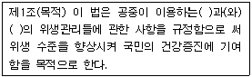

미용사(일반) (2008-10-05 기출문제)
1과목: 미용이론
1. 다음 중 삼푸의 효과를 가장 옳게 설명한 것은?
- 모공과 모근의 신경을 자극하여 생리기능을 강화한다.
- 모발을 청결하게 하며 두피를 자극하여 혈액순환을 원활하게 한다.
- 두통을 예방할 수 있다.
- 모발의 수명을 연장시킨다.
(정답률: 89%)

2. 전체적인 머리모양을 종합적으로 관찰하여 수정 보완시켜 완전히 끝맺도록 하는 것은?
- 통칙
- 제작
- 보정
- 구상
(정답률: 94%)
3. 원랭스 커트(one length cut)의 정의로 가장 적합한 것은?
- 두발 길이에 단차가 있는 상태의 커트
- 완성된 두발을 빗으로 빗어 내렸을 때 모든 두발이 하나의 선상으로 떨어지도록 자르는 커트
- 전체의 머리 길이가 똑같은 커트
- 머릿결을 맞추지 않아도 되는 커트
(정답률: 88%)
4. 퍼머넌트 시술시 비닐 캡의 사용목적과 가장 거리가 먼 것은?
- 산화방지
- 온도유지
- 제2액의 고정력 강화
- 제1액의 작용 활성화
(정답률: 62%)
5. 블런트 커트(blunt cut)의 특징이 아닌 것은?
- 모발손상이 적다.
- 입체감을 내기 쉽다.
- 잘린 부분이 명확하다.
- 커트 형태선이 가볍고 자연스럽다.
(정답률: 49%)
6. 매니큐어의 용구가 아닌 것은?
- 오렌지 우드 스틱
- 푸셔
- 아크릴릭 브러쉬
- 우드 램프
(정답률: 69%)
7. 두피 관리를 할 때 헤어 스티머(hair steamer)의 사용시간으로 가장 적합한 것은?
- 5~10분
- 10~15분
- 15~20분
- 20~30분
(정답률: 78%)
8. 스캘프 트리트먼트의 목적과 가장 관계가 먼 것은?
- 먼지나 비듬 제거
- 혈액순환을 왕성하게 하여 두피의 생리기능을 높임
- 두피의 지방막을 제거해서 두발을 깨끗하게 해줌
- 두피나 두발에 유분 및 수분을 보급하고 두발에 윤택함을 줌
(정답률: 34%)
9. 헤어스타일의 다양한 변화를 위해 사용되는 헤어피스가 아닌 것은?
- 폴(fall)
- 위그릿(wiglet)
- 웨프트(waft)
- 위그(wig)
(정답률: 60%)
10. 다음 성분 중 세정작용이 있으며 피부자극이 적어 유아용 샴푸제에 주로 사용되는 것은?
- 음이온성 계면활성제
- 양이온성 계면활성제
- 양쪽성 계면활성제
- 비이온성 계면활성제
(정답률: 47%)
11. 컬(curl)의 목적으로 가장 옳은 것은?
- 텐션, 루프(loop), 스템을 만들기 위해
- 웨이브, 볼륨, 플러프를 만들기 위해
- 슬라이싱,스 퀘어,베이스(base)를 만들기 위해
- 세팅, 뱅(bang)을 만들기 위해
(정답률: 80%)
12. 두발에서 퍼머넌트 웨이브 형성과 직접 관련이 있는 아미노산은?
- 시스틴(cystine)
- 알라닌(alanine)
- 멜라닌(melanin)
- 티로신(tyrosin)
(정답률: 80%)
13. 패디큐어(pedicure)에 대한 설명으로 옳은 것은?
- 발톱을 다듬을 때 발톱 양끝에서 중앙을 향해 줄질하여 타원형의 모양을 만든다.
- 발톱을 다듬을 때 일자로 줄질하며 양끝은 살짝 굴려 부드럽게 한다.
- 발톱을 다듬을 때 줄질하지 않으며 오로지 잘라내기만 한다.
- 발톱을 다듬을 때 오른쪽 끝에서 왼쪽 끝으로 줄질하여 원형의 모양을 만든다.
(정답률: 58%)
14. 아이론 선정방법으로 적합하지 않은 것은?
- 프롱의 길이와 핸들의 길이가 3:2로 된 것
- 프롱과 그루브의 접합지점 부분이 잘 죄어져 있는 것
- 단단한 강질의 쇠로 만들어진 것
- 프롱과 그루브가 수평으로 된 것
(정답률: 60%)
15. 신부화장에서 신부의 인중이 짧을 때는 어디를 수정해야 가장 적절한가?
- 윗입술을 작게 그리고 아랫입술을 크게 그린다.
- 윗입술은 크게 아랫입술은 작게 그린다.
- 코 벽을 세운다.
- 인중을 크게 그린다.
(정답률: 74%)
16. 삼한시대의 머리형에 관한 설명으로 틀린 것은?
- 포로나 노비는 머리를 깎았다.
- 수장급은 관모를 썼다.
- 일반인에게는 상투를 틀게 했다.
- 계급의 차이 없이 자유롭게 했다.
(정답률: 91%)
17. 그리스 페인트 화장이란?
- 낮 화장
- 햇볕 그을림 방지 화장
- 밤 화장
- 무대용 화장
(정답률: 82%)
18. 퍼머넌트 웨이브 시술시 굵은 두발에 대한 와인딩을 옳게 설명한 것은?
- 블로킹을 크게 하고 로드의 직경도 큰 것으로 한다.
- 블로킹을 작게 하고 로드의 직경도 작은 것으로 한다.
- 블로킹을 크게 하고 로드의 직경은 작은 것으로 한다.
- 블로킹을 작게 하고 로드의 직경은 큰 것으로 한다.
(정답률: 80%)
19. 고대 중국의 미용 설명으로 틀린 것은?
- 기원전 2200년경인 하(夏)나라 시대에 분을, 기원전 1150년경인 은(殷)나라의 주왕 때에는 연지화장이 사용되었다.
- B.C.246~210년에 아방궁 3천명의 미희들에게 백분과 연지를 바르게 하고 눈썹을 그리 게 했다.
- 액황이라고 하여 이마에 발라 약간의 입체감을 주었으며 홍장이라 하여 백분을 바른 후 다시 연지를 덧발랐다.
- 두발을 짧게 깎거나 밀어내고 그 위에 일광을 막을 수 있는 대용물로써 가발을 즐겨 썼다.
(정답률: 74%)
20. 미용술을 행할 때 제일 먼저 해야 하는 것은?
- 전체적인 조화로움을 검토하는 일
- 구체적으로 표현하는 과정
- 작업계획의 수립과 구상
- 소재 특징의 관찰 및 분석
(정답률: 83%)
2과목: 공중보건학
21. 열에 매우 약하며 조금만 가열하여도 쉽게 파괴되는 비타민은?
- 비타민A
- 비타민B1
- 비타민C
- 비타민F
(정답률: 58%)
22. 우리나라 보건행정의 말단 행정기관으로 국민건강증진 및 전염병 예방관리 사업 등을 하 는 기관명은?
- 의원
- 보건소
- 종합병원
- 보건기관
(정답률: 76%)
23. 신경독소가 원인이 되는 세균성 식중독 원인균은?
- 쥐 티프스균
- 황색 포도상구균
- 돈 콜레라균
- 보툴리누스균
(정답률: 61%)
24. 공중보건학에 대한 설명으로 틀린 것은?
- 지역사회 전체주민을 대상으로 한다.
- 목적은 질병예방. 수명연장, 신체적, 정신적 건강증진이다.
- 목적달성의 접근방법은 개인이나 일부 전문가의 노력에 의해 달성될 수 있다.
- 방법에는 환경위생, 전염병관리, 개인위생 등이 있다.
(정답률: 73%)
25. 다음 중 음용수에서 대장균 검출의 의의로 가장 큰 것은?
- 오염의 지표
- 전염병 발생예고
- 음용수의 부패상태 파악
- 비병원성
(정답률: 71%)
26. 절지동물에 의해 매개되는 전염병이 아닌 것은?
- 유행성 일본뇌염
- 발진티프스
- 탄저
- 페스트
(정답률: 49%)
27. 만성 카드뮴(Cd) 중독의 3대 증상이 아닌 것은?(오류 신고가 접수된 문제입니다. 반드시 정답과 해설을 확인하시기 바랍니다.)
- 당뇨병
- 빈혈
- 신장 기능장애
- 폐기종
(정답률: 32%)
28. 출생률이 높고 사망률이 낮으며 14세 이하 인구가 65세 이상 인구의 2배를 초과하는 인 구 구성 형은?
- 피라미드형
- 종형
- 항아리형
- 별형
(정답률: 69%)
29. 물체의 불완전 연소 시 많이 발생하며. 혈중 헤모글로빈의 친화성이 산소에 비해 약300배 정도로 높아 중독 시 신경이상증세를 나타내는 성분은?
- 아황산가스
- 일산화탄소
- 질소
- 이산화탄소
(정답률: 60%)
30. 우리나라 법정 전염병 중 가장 많이 발생하는 전염병으로 대개 1~5년을 간격으로 많은 유행을 하는 것은?
- 백일해
- 홍역
- 유행성 이하선염
- 폴리오
(정답률: 54%)
3과목: 소독학
31. 이.미용 업소에서 사용하는 수건의 소독방법으로 적합하지 않은 것은?
- 건열소독
- 자비소독
- 역성비누소독
- 증기소독
(정답률: 32%)
32. 살균력과 침투성은 약하지만 자극이 없고 발포작용에 의해 구강이나 상처소독에 주로 사용되는 소독제는?
- 페놀
- 염소
- 과산화수소
- 알콜
(정답률: 87%)
33. 다음 중 물리적 소독법에 해당하는 것은?
- 승홍소독
- 크레졸소독
- 건열소독
- 석탄산소독
(정답률: 74%)
34. 석탄산, 알코올, 포르말린 등의 소독제가 가지는 소독의 주된 원리는?
- 균체 원형질 중의 탄수화물 변성
- 균체 원형질 중의 지방질 변성
- 균체원형질 중의 단백질 변성
- 균체 원형질 중의 수분 변성
(정답률: 71%)
35. 고압증기 멸균법에서 20파운드의 압력에서는 몇 분간 처리하는 것이 가장 적절한가?
- 40분
- 30분
- 15분
- 5분
(정답률: 74%)
36. 플라스틱. 전자기기, 열에 불안정한 제품들을 소독하기에 가장 효과적인 방법은?
- 열탕소독
- 건열소독
- 가스소독
- 고압증기소독
(정답률: 44%)
37. 이.미용실의 실내소독법으로 가장 적당한 방법은?
- 석탄산소독
- 역성비누소독
- 승홍수 소독
- 크레졸소독
(정답률: 65%)
38. 다음 중 포자를 형성하는 세균의 멸균방법으로 가장 좋은 것은?
- 역성비누 소독
- 알코올 소독
- 일광소독
- 고압증기소독
(정답률: 76%)
39. 화학적 약제를 사용하여 소독시 소독약품의 구비조건으로 옳지 않은 것은?
- 용해성이 낮아야 한다.
- 살균력이 강해야 한다.
- 부식성, 표백성이 없어야 한다.
- 경제적이고 사용방법이 간편해야 한다.
(정답률: 73%)
40. 지표군이나 화학적 지시계를 이용하여 살균효과를 판정하는 방법은?
- 살균효과의 지속적 감시
- 소독약품의 살균력 평가
- 균슈 측정
- 멸균효과의 지속적 감시
(정답률: 28%)
4과목: 피부학
41. 두발의 색깔을 좌우하는 멜라닌은 다음 중 어느 곳에 가장 많이 함유되어 있는가?
- 모표피
- 모피질
- 모수질
- 모유두
(정답률: 64%)
42. 가장 이상적인 피부의 PH범위에 속하는 것은?
- PH0.1~2.5
- PH2.5~4.3
- PH5.2~5.8
- PH6.5~8.5
(정답률: 60%)
43. 피부구조에 있어 유두층에 관한 설명 중 틀린 것은?
- 혈관과 신경이 있다.
- 혈관을 통하여 기저층에 많은 영양분을 공급하고 있다.
- 수분을 다량으로 함유하고 있다.
- 표피층에 위치하여 모낭주의에 존재한다.
(정답률: 50%)
44. 모발의 케라틴 단백질은 PH 에 따라 물에 대한 팽윤성이 변한다. 다음 중 가장 낮은 팽윤성을 나타내는PH는?
- 1~2
- 4~5
- 7~9
- 10~12
(정답률: 52%)
45. 수렴화장수의 원료에 포함되지 않는 것은?
- 습윤제
- 알코올
- 물
- 표백제
(정답률: 73%)
46. 두피 약화로 인한 탈모의 원인과 가장 거리가 먼 것은?
- 남성 호르몬
- 노화
- 유전적 질환
- 비만
(정답률: 67%)
47. 자외선 차단제에 관한 설명이 틀린 것은?
- 자외선 차단제는 SPF의 지수가 매겨져 있다.
- SPF는 수치가 낮을수록 자외선 차단지수가 높다.
- 자외선 차단제의 효과는 피부의 멜라닌 양과 자외선에 대한 민감도에 따라 달라질 수 있다.
- 자외선 차단지수는 제품을 사용했을 때 홍반을 일으키는 자외선의 양을, 제품을 사용하지 않았을 때 홍반을 일으키는 자외선의 양으로 나눈 값이다.
(정답률: 79%)
48. 털의 기질부(모기질)는 표피층 중에서 어느 부분에 해당하는가?
- 각질층
- 과립층
- 유극층
- 기저층
(정답률: 46%)
49. 다음 중 피지선의 노화현상을 나타내는 것은?
- 피지의 분비가 많아진다.
- 피지분비가 감소된다.
- 피부중화 능력이 상승된다.
- PH의 산성도가 강해진다.
(정답률: 70%)
50. 일반적으로 아포크린샘(대한선)의 분포가 없는 곳은?
- 유두
- 겨드랑이
- 배꼽주변
- 입술
(정답률: 79%)
5과목: 공중위생법규
51. 이.미용사는 영업소 외의 장소에서는 이.미용업무를 할 수 없다. 그러나 특별한 사유가 있는 경우에는 예외가 인정 되는데 다음 중 특별한 사유에 해당하지 않는 것은?
- 질병으로 영업소까지 나올 수 없는 자에 대한 이.미용
- 혼례 기타 의식에 참여하는 자에 대하여 그 위식 직전에 행하는 이.미용
- 긴급히 국외에 출타하려는 자에 대한 이.미용
- 시장.군수.구청장이 특별한 사정이 있다고 인정하는 경우에 행하는 이.미용
(정답률: 80%)
52. 이.미용 영업자가 이.미용사 면허증을 영업소 안에 게시하지 않아 당국으로부터 개선명령을 받았으나 이를 위반한 경우의 법적 조치는?
- 100만원 이하의 벌금
- 100만원 이하의 과태료
- 200만원 이하의 벌금
- 300만원 이하의 과태료
(정답률: 47%)
53. 과태료처분에 불복이 있는 자는 그 처분의 고지를 받은 날부터 며칠 이내에 처분권자에게 이의를 제기할 수 있는가?
- 5일
- 10일
- 15일
- 30일
(정답률: 80%)
54. 다음 중 청문을 거치지 않아도 되는 행정처분은?
- 영업장의 개선명령
- 이.미용사의 면허취소
- 공중위생영업의 정지
- 영업소 폐쇄명령
(정답률: 69%)
55. 이.미용 영업소 폐쇄의 행정처분을 받고도 계속하여 영업을 할 때에는 당해 영업소에 대하여 어떤 조치를 할 수 있는가?
- 폐쇄 행정처분 내용을 재 통보한다.
- 언제든지 폐쇄 여부를 확인만 한다.
- 당해 영업소 출입문을 폐쇄하고, 벌금을 부과한다.
- 당해 영업소가 위법한 영업소임을 알리는 게시물 등을 부착한다.
(정답률: 62%)
56. 공중위생관리법에 규정된 벌칙으로 1년 이하의 징역 또는 1천만원 이하의 벌금에 해당하는 것은?
- 영업지정명령을 받고도 그 기간 중에 영업을 행한 자
- 위생관리 기준을 위반하여 환경오염 허용기준을 지키지 아니한 자
- 공중위생영업자의 지위를 승계하고도 변경신고를 아니한 자
- 건전한 영업질서를 위반하여 공중위생영업자가 지켜야 할 사항을 준수하지 아니한 자
(정답률: 62%)
57. 영업소 출입. 검사 관련공무원이 영업자에게 제시해야 하는 것은?
- 주민등록증
- 위생검사 통지서
- 위생 감시 공무원증
- 위생검사 기록부
(정답률: 71%)
58. 공중위생관리법의 목적을 적은 아래 조항 중()속에 순서대로 알맞은 말은?

- 영업소, 설비
- 영업장, 시설
- 위생영업소, 이용시설
- 영업, 시설
(정답률: 42%)
59. 면허가 취소되거나 면허의 정지명령을 받은 자는 지체 없이 누구에게 면허증을 반납해야 하는가?
- 시.도지사
- 시장, 군수, 구청장
- 보건복지부장관
- 경찰서장
(정답률: 88%)
60. 음란행위를 알선 또는 제공하거나 이에 대한 손님의 요청에 응한 경우, 1차 위반시 영업소에 대한 행정처분기준은?
- 영업정지 2월
- 영업정지 3월
- 영업정지 6월
- 영업장 폐쇄
(정답률: 53%)